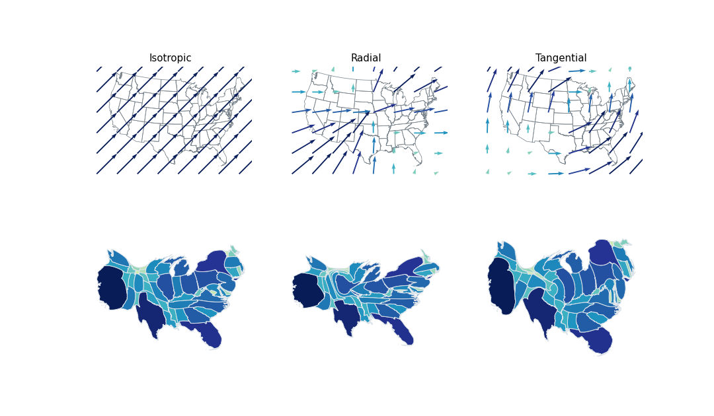
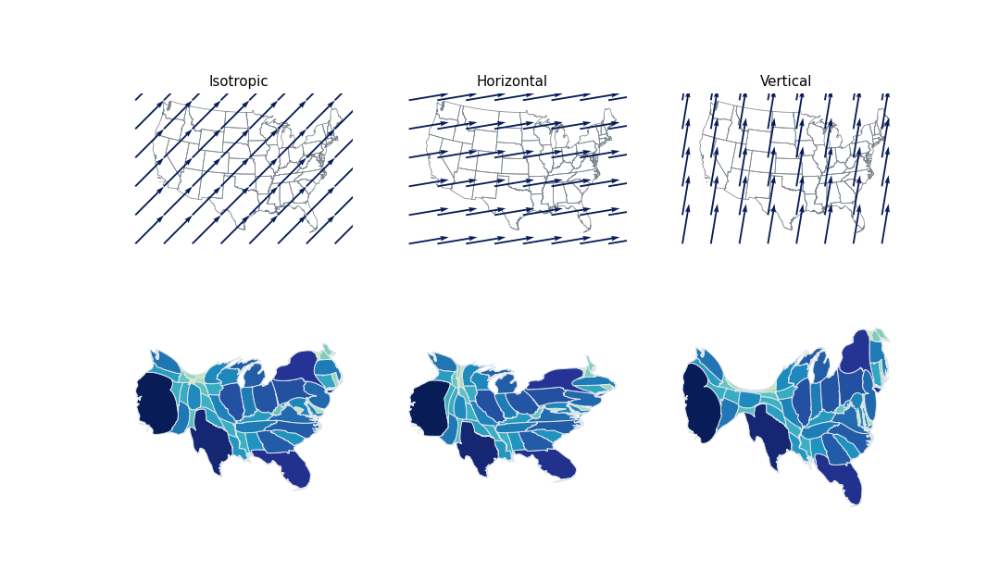

A new how-to compares a horizontal, vertical, radial and tangential DirectionalTensor on the US states, with a preview row and the cartogram row, the convergence check and the choice of the ratio. It does not repeat reduce-boundary-distortion, which previews the velocity modulators for the outer edge but never shows the cartogram of a DirectionalTensor.
The figures are the two outputs of the how-to notebook.
reduce-boundary-distortion.ipynb ("Controlling Geographical Distortions") has an Anisotropy section (Dx, Dy) and previews of BoundaryDecay, BoundaryNormalDecay, the DirectionalTensor variants (radial, tangential, uniform, seeded) and LocalizedTensor. It shows previews of the modulators; the only cartograms it computes are for Dx/Dy, the density border extension and prescaling, and its goal is the distortion at the outer edge. The new page shows the cartogram that a preferred direction produces and how to choose its ratio, and links back to the old page for the other modulators.
| direction | status | mean error | max error |
|---|---|---|---|
| isotropic | CONVERGED | 0.20 % | 0.79 % |
| horizontal | CONVERGED | 0.95 % | 7.11 % |
| vertical | CONVERGED | 0.85 % | 8.26 % |
| radial | CONVERGED | 0.65 % | 9.26 % |
| tangential | CONVERGED | 1.56 % | 8.02 % |
| how-to | docs/how-to/steer-the-flow-with-a-directional-tensor.ipynb, in the navigation and the how-to index |
| old how-to | one sentence linking to the new page |
| not taken from the talk | the talk's panels draw the direction field with a private method of the modulator; the how-to previews the modulator with the public preview_velocity_modulator instead |
The notebook runs without error (about 4 s); the docs build runs in CI.

The same for the radial and tangential directions around the centroid of the map.

Top: a diagonal probe field passed through the modulator turns toward the preferred direction (isotropic: unchanged). Bottom: the cartograms for isotropic, horizontal and vertical flow.